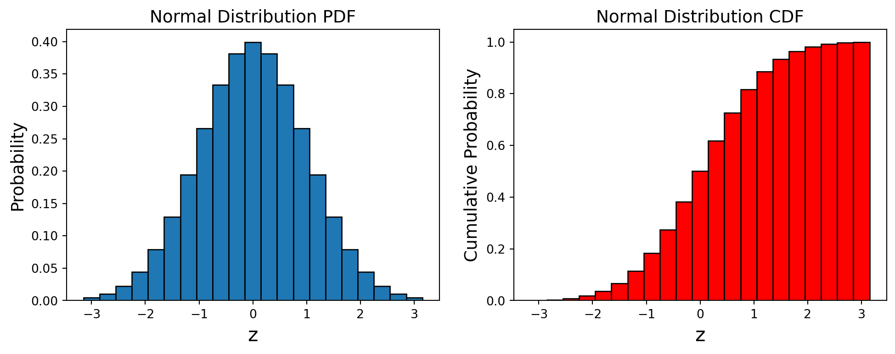

Hint: Hover your mouse over the numbered circles for code explanations
# Librariesfrom math import exp, sqrt, pi# Variablesx =1.75# Calculationsy = exp(-x**2/2) / sqrt(2*pi)# Printingprint(f"The PDF of the standard normal distribution at x={x} is {y:.3}")
1
Import required functions from the math library.
2
Assign a value to a variable using the assignment operator =
3
Perform a simple calculation and assign the result to a variable.
4
Print (display) the result in a formatted f-string.
The PDF of the standard normal distribution at x=1.75 is 0.0863
Functions
# Built-in functionsp3 =round(pi, 3)print(p3, pi)
1
The inbuilt round function takes two arguments:
3.142 3.141592653589793
the number to round;
the number of decimal places required.
# Defining a new functiondef normal(x, mean=0, stdev=1): norm =1/ ( stdev * sqrt(2*pi) ) z = (x-mean)/stdev PDF = norm * exp(-z**2/2)return PDF,z# "calling" a functiony,z = normal(2.75, mean=1)print(z,y)
1
Defining a new function stores it in memory for later use.
Positional argumets must be given in the order specified.
Keyword arguments use the = operator and take default values that are used if not specified when the function is called.
2
Any variable names used in the function definition are not seen by the main program and do not conflict with variables of the same name therein.
3
The return keyword passes any number of variables back as a result to the main program when the function is called later.
Anything following the application of return in a function is ignored.
4
Variables passed as arguments to the function when it is applied do not need to have the same name as in the function definition, as the two are independent of each other.
Keyword arguments can have the same name as the keyword itself without confusion, e.g.: mean=mean would work perfectly well if the word to the right of the = was a variable name.
1.75 0.08627731882651153
Conditionals
# define a new function for re-usedef discuss(zval):if-1<= zval <=1:print("This event is quite common!")elif-2<= zval <=2:print("This event not so common!")else:print("This event is very rare!")discuss(z)
1
Putting other code elements in a function block allows reuse of code for efficiency.
2
if is a truth check that runs the code block if the condition (“less than or equal to”) is True and not if it is False.
3
elif (“else if”) is only considered when the first if was not satisfied.
4
else covers all other eventualities when none of the previous conditions were met.
This event not so common!
Iteration
# define zz=-3while z<=3:print("z=", z) discuss(z) z = z+0.5
1
A variable must exist for a conditional to work.
2
while is like if but the code-block “loops” (repeats from the start of the block) until the condition is no longer true.
3
The variable tested against the condition must change or the loop will never exit!
z= -3
This event is very rare!
z= -2.5
This event is very rare!
z= -2.0
This event not so common!
z= -1.5
This event not so common!
z= -1.0
This event is quite common!
z= -0.5
This event is quite common!
z= 0.0
This event is quite common!
z= 0.5
This event is quite common!
z= 1.0
This event is quite common!
z= 1.5
This event not so common!
z= 2.0
This event not so common!
z= 2.5
This event is very rare!
z= 3.0
This event is very rare!
The range(N) function counts N times (from \(0\) to \(N-1\)).
The list function turns a valid argument into a Python list.
[0, 1, 2, 3, 4, 5, 6, 7, 8, 9]
# "List comprehension"new_list = [n+1for n in int_list]print(new_list)
1
New lists can be made using square brackets [] or generated from other lists using the [OPERATION for ITEM in LISTNAME] syntax.
[1, 2, 3, 4, 5, 6, 7, 8, 9, 10]
# for loopsfor n inrange(11): x2 =0.1*n -0.5print(round(x2,1))
1
A list or other “iterable” (such as the range function) can be iterated (“looped”) through using a for loop.
In this example n successively takes each value in the range 0 to 10 (so 11 values in total).
When looping through a list it would similarly take each value in that list in turn.
2
The block is executed for each item in the list.
Note: here the value of n is actually used in the calculation, but it can also simply act as a counter for a fixed number of iterations.
-0.5
-0.4
-0.3
-0.2
-0.1
0.0
0.1
0.2
0.3
0.4
0.5
Example: Numerical Integration
Some functions such as the normal distribution \(\displaystyle y = \frac{1}{\sigma \sqrt{2\pi}} e^{-\frac{1}{2}\left(\frac{x-\mu}{\sigma}\right)^2}\) cannot be integrated analytically (by hand).
We can do this numerically by approximating the area under the curve using finite blocks of width \(\Delta x\) and height \(y\) and adding their area. See the plots in Section 6.
The code below combines the programming building blocks above to approximate the area under (integrate) the normal distribution between two values \(x=a\) and \(x=b\)
from math import exp, sqrt, pi# Defining the normal distribution function (with standard values as default parameters)def normal(x, params=None):if params==None: mean=0 stdev=1 norm =1/ ( stdev * sqrt(2*pi) ) z = (x-mean)/stdev PDF = norm * exp(-z**2/2)return PDF# Define an integration functiondef integrate(func, a, b, dx, params=None):"""Integrates a function named as the first argument between limits a and b with resolution dx func(x, params=(p1,p2,...)) must take only one positional argument and possibly optional parameters as a single argument""" Area =0 x=awhile x<=b: y = func(x, params) bar_area = y*dx Area += bar_area x=x+dxreturn Areaxmin =-3; xmax=3#true value should be 99.73%I = integrate(normal, xmin, xmax, 0.1)print(f"Estimated probability of being between z={xmin} and z={xmax} is {I*100:.3f}%\n") # create a list of values for the Cumulative Distribution FunctionPDF=[]CDF=[]N =21#number of values to estimatestepsize = (xmax-xmin)/(N-1) # N-1 gaps between N values bvals=[xmin+(i*stepsize) for i inrange(N)]for b in bvals: p = normal(b) c = integrate(normal, -10, b, 0.001) PDF.append(p) CDF.append(c)print(f"{N} values of the CDF between {xmin} and {xmax}:")for i inrange(N):print(f"The probability of being below z={bvals[i]:.2} is {CDF[i]:.4f}")
1
The function can take either one or two arguments. The second one defaults to the special None datatype
2
If no second argument (with optional keyword params) is specified they take default values.
3
The normal distribution is assumed standardised unless otherwise specified: \(\mu = 0\), \(\sigma = 1\)
4
Specify the constant in the equation
5
Normalisation for when this isn’t already the case.
6
Calculate the Probability Distribution Function at the value of \(x\).
7
Return the PDF value for use in the main function.
8
The first argument is the name of any function to be numerically integrated.
9
Define a variable that we will add successive elements of area to (see the definition of integration using small slices under a curve).
10
Take sucessive values of \(x\), starting at the lower limit \(a\).
11
Repeat the steps below until \(x=a\).
12
Evaluate the height \(y\) of the function \(y=f(x)\) at each value of \(x\) in turn in the loop.
13
Calculate the area of the current rectangular element
14
Add the new element area to the total area
15
Increase \(x\) to the next step along.
16
When \(x>b\) the while loop exits and the function returns the numerical estimate of the area under the curve between \(a\leq x\leq b\).
17
Integrate the normal distribution function between \(-3\leq x\leq 3\) with a slice width \(\Delta x = 0.1\).
18
Empty lists are defined to store data values in.
19
The Cumulative Distribution Function consists of values of the integral \(\displaystyle\int_{-\infty}^b \operatorname{PDF}\) for different values of \(b\).
20
Generate a list of \(N\) values from xmin (when \(i=0\)) to xmax (when \(i=20\)).
21
For each of the 21 b-values to evaluate at.
22
Calculate the value of the normal distribution.
23
Integrate the normal distruibution to estimate the CDF at that point. Note:normal(-10) is close enough to zero, so we don’t need to go to \(-\infty\)!
24
Append the function values for each of the PDF and CDF to their respective lists.
Estimated probability of being between z=-3 and z=3 is 99.728%
21 values of the CDF between -3 and 3:
The probability of being below z=-3.0 is 0.0013
The probability of being below z=-2.7 is 0.0035
The probability of being below z=-2.4 is 0.0082
The probability of being below z=-2.1 is 0.0178
The probability of being below z=-1.8 is 0.0360
The probability of being below z=-1.5 is 0.0669
The probability of being below z=-1.2 is 0.1152
The probability of being below z=-0.9 is 0.1842
The probability of being below z=-0.6 is 0.2744
The probability of being below z=-0.3 is 0.3823
The probability of being below z=0.0 is 0.5002
The probability of being below z=0.3 is 0.6181
The probability of being below z=0.6 is 0.7259
The probability of being below z=0.9 is 0.8161
The probability of being below z=1.2 is 0.8850
The probability of being below z=1.5 is 0.9333
The probability of being below z=1.8 is 0.9641
The probability of being below z=2.1 is 0.9822
The probability of being below z=2.4 is 0.9918
The probability of being below z=2.7 is 0.9965
The probability of being below z=3.0 is 0.9987
Plotting
import matplotlib.pyplot as pltfig = plt.figure(figsize=(12,4))ax1 = fig.add_subplot(1,2, 1)ax1.bar(bvals,PDF, edgecolor="black", width=stepsize)ax2 = fig.add_subplot(1,2, 2)ax2.bar(bvals,CDF, color="red", edgecolor="black", width=stepsize)ax1.set_xlabel("z", size=16)ax2.set_xlabel("z", size=16)ax1.set_title("Normal Distribution PDF", size=14)ax1.set_ylabel("Probability", size=14)ax2.set_title("Normal Distribution CDF", size=14)ax2.set_ylabel("Cumulative Probability", size=14)fig.savefig("normal_plots.png")
1
Import the plotting library
2
Generate a new figure canvas to plot graphs on
3
Make a layout that’s one column and two rows of axes, the third argument says which axis to plot on for the ax1 figure object.
4
Plot a bar graph with bvals on the \(x-\)axis and the PDF values on the \(y-\)axis, with bar widths matching the step-size in the previous code.
5
Set a new pair of plotting axes ax2 for the second subplot.
6
It’s not good practice to use figure titles, better to label them (a) and (b) and discuss in the caption. Here for convenience only.
7
Save the figure as an image file to use in reports etc.

Manipulating and analysing data
import pandas as pd# read in external data filedata = pd.read_excel("Files/Case Study Data.xlsx", sheet_name="Data")cols = ['Project', 'Region', 'Country', 'Type', 'Rating', 'Cost.Million.USD','Total.Area.sqm', 'Total.Delivered.kWh']data[cols]
/home/macha/anaconda3/lib/python3.9/site-packages/openpyxl/worksheet/_reader.py:329: UserWarning:
Unknown extension is not supported and will be removed